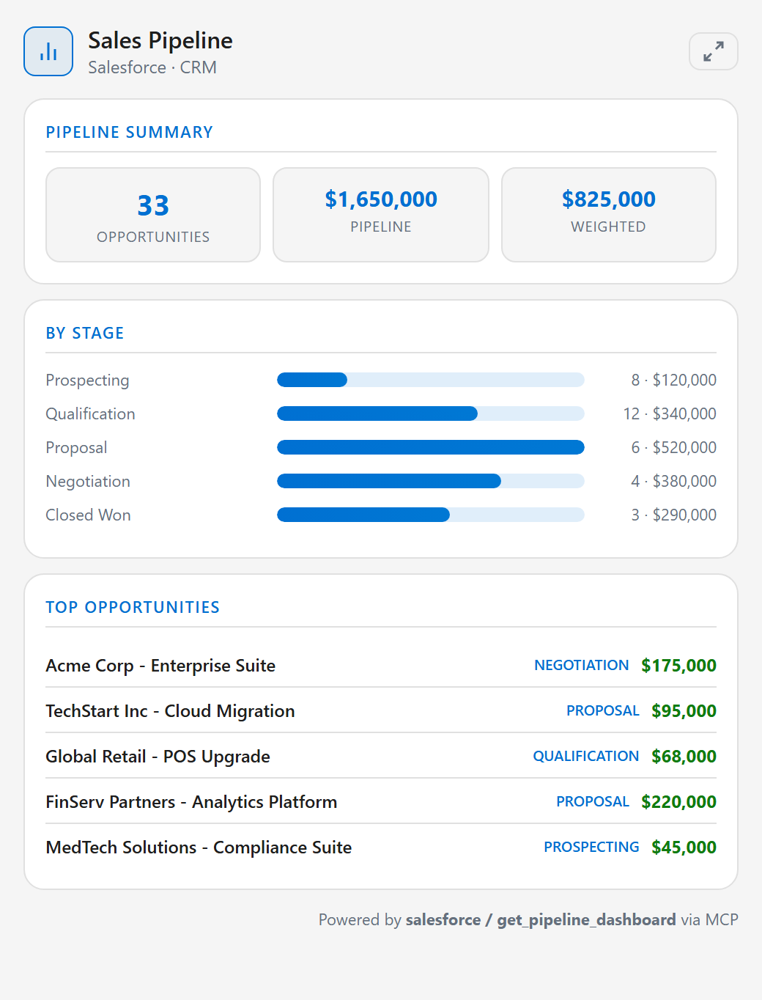
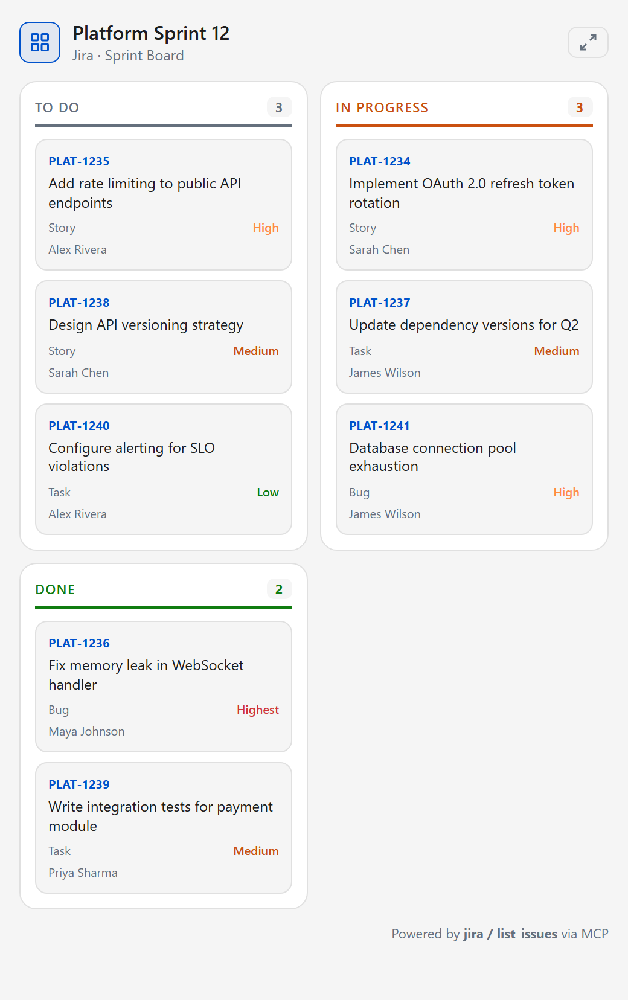
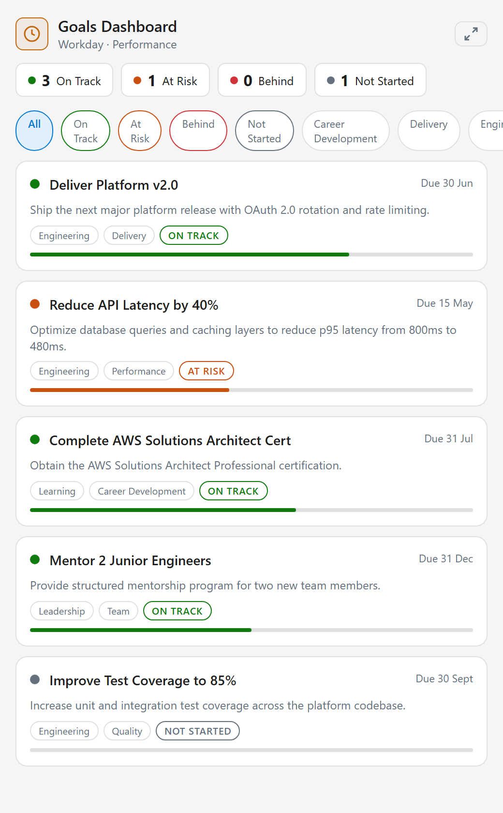

ESS-MCP
Enterprise Self-Service, end-to-end on the Model Context Protocol — and a worked example of every shape an AI agent can take inside the Microsoft cloud. One consistent enterprise toolset, surfaced four different ways across Copilot, Cowork, and autonomous agents — all governed through Agent 365.
The four pillars
One enterprise tool layer spanning people, IT, CRM, engineering, SAP and procurement — surfaced across four agent patterns.
Modular, actionable servers
Single-image MCP servers for 7 enterprise platforms, each exposing tools and widgets an agent can render, edit and submit. stdio · SSE · Streamable HTTP · combined ASGI gateway, with one-command Azure Container Apps deploy.
Employee Self Service in Copilot
A complete declarative agent that wires all 7 MCP servers into Microsoft 365 Copilot as RemoteMCP plugins, alongside SharePoint, OneDrive and Graph Connector knowledge.
Five packaged Cowork plugins
Each pairs a fleet of Agent Skills — dashboards, decks, Adaptive Cards, executive briefs — with the matching ESS-MCP server as a remote MCP connector, packaged as Teams app .zips.
A governed digital worker
A hosted, autonomous AI teammate with its own Microsoft Entra Agent Identity — fully integrated with Agent 365 (Entra, Purview, Defender, M365 Admin Center, Foundry), calling tools through the APIM AI Gateway with end-to-end OpenTelemetry observability.
The widget surface
Every widget renders inline in Microsoft 365 Copilot, ChatGPT, Claude, or any MCP-aware client. Forms submit straight to MCP tool callbacks — the agent never has to compose JSON.






Why it matters
ESS-MCP is the reference for how one governed enterprise toolset becomes durable digital labour — not four disconnected demos. The same tools power a chat agent, a Cowork surface, and a fully autonomous teammate, and every call is identity-asserted and observable through Agent 365.
Bearer-token passthrough by default; the autonomous agent additionally fronts the gateway with the APIM AI Gateway for policy, identity-asserted token exchange, and full Purview / Defender / OpenTelemetry observability.